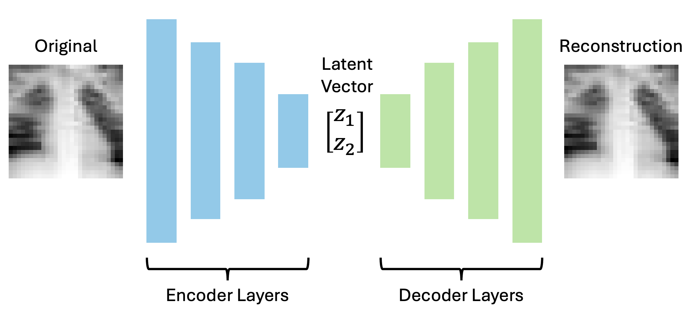
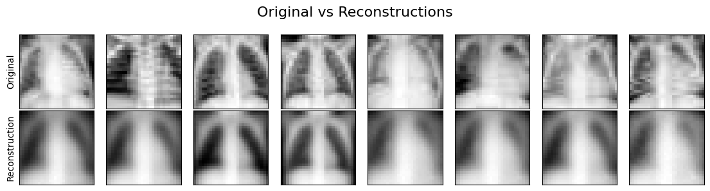
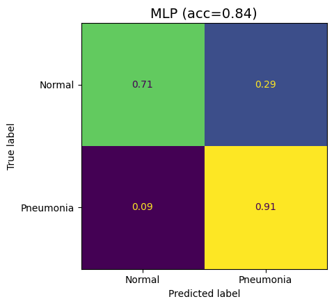
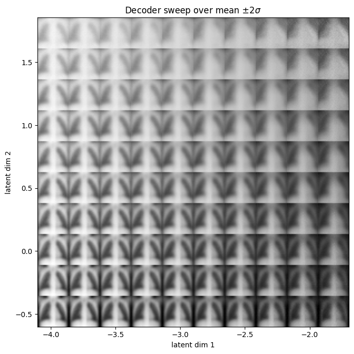

2. Interpretable Autoencoders for Image Classification¶
Objectives
Describe autoencoder architecture and how it compresses images into latent representations
Train an autoencoder on the PneumoniaMNIST dataset to reconstruct and generate synthetic X-rays
Classify images directly from their latent vectors, assessing performance with accuracy and confusion matrices
Interpret the latent space to connect model representations to meaningful image features
The following notes support Session2_Autoencoder_PneumoniaMNIST_Workshop.ipynb.
A Clinical Application¶
In Session 1, we explored some of the fundamental concepts behind deep learning and generative AI. In this session, we’ll put those ideas towards a simple clinical application and build our first generative model.
We’re going to be using the an X-ray image dataset called PneumoniaMNIST, which contains images from two classes:
Class 1: healthy patients.
Class 2: patients with pneumonia.
Our aim is to create an autoencoder, which we will then use to:
Generate new images.
Predict whether a given image represents a healthy or diseased patient.
Identify which visual or morphological features change between healthy patients and patients with disease.
Images as Tensors¶
Image data is one of the most common and easily-accessible data types in the life sciences.
An image, fundamentally, is just a grid of numbers (usually a matrix, or a stack of matrices). In a greyscale image, each number represents pixel brightness. In a colour image, we usually have three grids stacked together: red, green and blue channels.
We can represent images as tensors. For example, a 256 by 256 pixel greyscale image can be represented as a 2D tensor of 256 by 256 numbers, with each number defined between 0 and 1 (where 0 is total darkness and 1 is absolute brightness).

Images represented as arrays and tensors. A greyscale image can be represented as a matrix or tensor of numbers, with pixel brightness intensities defined between 0 and 1. In this figure, we extract a \(4 \times 4\) pixel segment of the image and view its matrix representation (to 1 decimal place).¶
PneumoniaMNIST is part of the MedMNIST dataset and contains images of chest X-rays on patients with and without pneumonia. In PneumoniaMNIST, each image is 28 by 28 pixels with one greyscale channel.

A 2 by 6 grid of example PneumoniaMNIST X-rays. The top row shows healthy patients (classified here as “Normal”) and the bottom row shows patients with pneumonia (classified here as “Pneumonia”). In X-rays, pneumonia manifests as cloudier white patches.¶
Note
Always look at the data Before training anything, it’s best practice to visualise your data. In PneumoniaMNIST, normal lungs tend to appear darker and clearer, while pneumonia often appears as hazier or whiter regions. The model will only learn from the pixel patterns it sees, so we need to know what those patterns look like.
What is an Autoencoder?¶
As we discussed in the last session, an autoencoder (AE) is a type of neural network that learns to compress an input into a smaller representation and then reconstruct the original input. This forces the network to learn only the most important features of the data. The compressed representation is called the latent representation, and the space of all possible latent representations is the latent space.
In practice, an AE is made up of two halves:
An encoder - which compresses the input into a latent representation.
A decoder - which reconstructs the input from that representation.
In the next notebook, we’ll learn to compress our PneumoniaMNIST images into the latent space and then reconstruct them. The input image has \(28 \times 28 = 784\) pixel values, while the latent representation has only 2 values. This means the model is forced to squeeze the image through a tiny bottleneck, then reconstruct it. If it succeeds, those two numbers must carry useful information about the original X-ray.
In this case, our encoder and decoder will be built from fully-connected layers.


A diagram of an autoencoder. On the left, a 28 by 2 pixel X-ray enters the encoder. In the middle, it is compressed into a 2D latent vector. On the right, the decoder reconstructs the X-ray.¶
This is what our autoencoder looks like in PyTorch:
# Here's where we define the autoencoder using PyTorch
# We use the subclass nn.Module to let Python know we're defining a new neural network
class SimpleAutoencoder(nn.Module):
"""One-block fully-connected autoencoder with a 2D latent space."""
# These scary lines of code basically just set some important default numbers the network needs to remember,
# e.g. the size of the input image, the size of the hidden layer, and the size of the latent space.
def __init__(self, input_dim: int = 28 * 28, hidden_dim: int = 128, latent_dim: int = 2):
super().__init__()
# Store the size of our input image. Our network requires a vector input, so instead of passing an entire
# 28 by 28 pixel image, we pass a flattened vector of 28*28 pixels.
self.input_dim = input_dim
# Here we define the encoder layers
self.encoder = nn.Sequential(
# Project the flattened image down to the hidden width
nn.Linear(input_dim, hidden_dim),
# Use a ReLU activation function between layers (we set inplace=True to save memory)
nn.ReLU(inplace=True),
# Project hidden representation down to the 2D latent space
nn.Linear(hidden_dim, latent_dim),
)
# And here are the decoder layers
self.decoder = nn.Sequential(
# Expand the latent vector back up to the hidden width
nn.Linear(latent_dim, hidden_dim),
# Use a ReLU activation function between layers
nn.ReLU(inplace=True),
# Project hidden representation back up to pixel space (original image size)
nn.Linear(hidden_dim, input_dim),
# Use a sigmoid activation function to map pixels back to [0, 1] range
nn.Sigmoid(),
)
# This function encodes the input image into a 2D latent space by calling the encoder layers
def encode(self, x):
# Flatten image batch from (N,1,28,28) to (N,784), then run through the encoder
return self.encoder(x.view(x.size(0), -1))
# This function decodes the latent space back into an image by calling the decoder layers
def decode(self, z):
# Run the latent through the decoder and reshape back to image dimensions
return self.decoder(z).view(-1, 1, 28, 28)
# This function puts the encoder and decoder together and returns the encoded image and the latent space
def forward(self, x):
# Encode the input batch into a latent vector (here, z represents two numbers)
z = self.encode(x)
# Decode the latent vector back into a reconstructed image (x_hat is our reconstruction)
x_hat = self.decode(z)
# Return both reconstruction and latent representation
return x_hat, z
The model output is a reconstructed image, and the target is the original image. We need a loss term which compares how closely our output matches our input - here, we can again use the mean squared error (MSE). To calculate this, we subtract the value of each pixel in the reconstruction (\(\hat{y}_i\)) from the same pixel in the original image \(y_i\), square it (multiply it by itself), and average the value over all pixels. Mathematically, this is given by the following formula (where \(n\) is the total number of pixels):
For these images, you can think of this as comparing every pixel in the original X-ray with the corresponding pixel in the reconstruction. The closer the pixel values are, the lower the MSE. A perfect reconstruction would have an MSE equal to zero. You can see some example images and their reconstructions below.


Example original X-rays and their autoencoder reconstructions. This lets us compare the model’s pixel-level reconstruction quality with the structure visible in the original images.¶
Exercise
Take a \(2 \times 2\) “image” with true pixel values \([[1.0, 0.0], [0.0, 1.0]]\) and a reconstruction \([[0.8, 0.1], [0.2, 0.9]]\). What is the MSE?
Solution
Errors for each pixel are 0.2, 0.1, 0.2, 0.1. Squared they are 0.04, 0.01, 0.04, 0.01, summing to 0.10. Dividing by \(n=4\) pixels gives MSE = 0.025.
Latent Spaces¶
Many neural networks do not only produce final predictions. Inside the model, they build intermediate representations of the input. A latent representation is one of these compressed internal descriptions, and a latent space is the coordinate system formed by all possible latent representations.
The latent space is where the model organises what it has learned. If two X-rays are visually similar, their latent representations should lie close to each other in the latent space. If pneumonia creates consistent image features, those features may appear as clusters in the latent space.
You can think of the latent representation as a compressed coordinate system. Instead of describing an X-ray with 784 pixel values, the autoencoder tries to describe it with just two values. Those two values will not have obvious meanings at first, but by plotting them and decoding points from the space, we can start to probe what they represent.
In the following notebook, we’ll compress our entire test image dataset into the 2D latent space below. Every blue point you see here represents a “normal” chest X-ray, and every red point represents a “pneumonia” chest X-ray. Despite not telling our model anything about the image classes, it seems our autoencoder has learned to partially separate the classes in the latent space. This suggests that we’re encoding image features which contain important information relevant to the image class.

A scatter plot of the 2D latent space. Each point is one test X-ray, coloured by class label, showing normal and pneumonia samples occupying different regions.¶
Classifying Directly from the Latent Space¶
Once the latent space is structured, we can train a classifier on the latent vectors.
The classifier in the notebook is a small MLP. It takes the two latent values as input and predicts whether an image belongs to the “normal” class or the “pneumonia” class.
In the code, our classifier looks something like this:
# Here, we create a small MLP that classifies latent vectors as "Normal" or "Pneumonia"
# This is just another neural network, with some simple fully-connected layers.
class LatentMLP(nn.Module):
# Define the important variables (latent dimension, hidden dimension, number of classes)
def __init__(self, latent_dim, hidden=32, n_classes=2):
super().__init__()
# This is a two-layer MLP with dropout
self.net = nn.Sequential(
nn.Linear(latent_dim, hidden),
nn.ReLU(inplace=True),
nn.Dropout(0.2),
nn.Linear(hidden, n_classes),
)
# Forward pass returns the logits for each class
def forward(self, z):
return self.net(z)
You’ll notice that we include a Dropout layer here - this isn’t a different layer type, it just randomly switches off 20% of the neurons from the previous layer. This may seem counter-intuitive, but it actually helps the network generalise.
Ultimately, the network outputs a logit for each class - this is basically a score which represents how much the latent vector seems to belong to each class.
Logits are unbounded, meaning they can theoretically be arbitrarily large. To account for this, we typically apply a softmax function, which essentially converts all logits into a probability distribution. The formula for softmax is
where \(p_i\) is the probability of picking class \(i\) - this is equivalent to the exponent of the \(i^{th}\) logit divided by the sum of the exponents of all logits. All you really need to know is that this maps every logit to a value between 0 and 1 (with 0 being 0% chance and 1 being 100% chance).
This tells us what the probability of the latent vector belonging to each class is. Typically, we take the class with highest probability to be the model’s prediction.
Since the classifier MLP is also a neural network, it requires its own loss term. For this, we use cross-entropy loss. This loss is minimised when the MLP correctly predicts the true class of every latent vector with 100% certainty.
Discussion
Why do we train the latent classifier after the autoencoder has finished training rather than at the same time?
Solution
The classifier learns a mapping from the latent space, so that space needs to be fixed. If it were still moving (as it does during training), the classifier would be chasing a moving target.
We can get an estimate of how well our classifier is performing using the accuracy. This represents the percentage of correct predictions made by the model.
However, since biological datasets can be imbalanced, accuracy alone can be misleading. If one class is much larger, a model can get decent accuracy by mostly predicting the majority class. Just to be sure, we’ll also plot a confusion matrix, which shows us the number of images in each class and their predicted labels.


A confusion matrix for classification from latent vectors, showing true positives, false positives, true negatives and false negatives.¶
Discussion
A test set has 900 normal and 100 pneumonia X-rays. A trained model always predicts “normal” for every image. Why might this happen? What is this model’s accuracy?
Solution
Why might this happen? - It could be because the training set was heavily imbalanced, with very few pneumonia cases. The model learns that the easiest way to ensure high accuracy is to treat all images as “normal”.
What is this model’s accuracy? - 90%. It misses every single pneumonia case while looking great on accuracy. A confusion matrix helps to expose this issue.
From Reconstruction to Generation¶
Once the autoencoder is trained, the decoder acts as a function from latent coordinates to images. That means we can make up latent vectors and ask the decoder to turn them into X-rays. By doing this, we’re generating entirely synthetic images - this is a primitive version of how modern AI image generators work.
At the end of the notebook, we’ll create a grid of entirely synthetic X-rays, sampled at various points across the latent space. Some of these X-rays seem realistic, others just look like noise, but none of them are actually real.


A grid of decoded synthetic X-rays across the 2D latent plane.¶
Interpreting the Latent Space¶
You may have heard neural networks described as “black box” approaches - this means we don’t really have an intuitive understanding of what the model is learning. Indeed, when our model is made up of billions of different weight and bias parameters, it becomes difficult to discern what any of them actually mean. In life science, this can be problematic, because we usually want to understand why a model produced a certain output, especially when that output may influence clinical or biological decisions.
For this reason, we may use methods from interpretable AI. The latent space gives us one route to interpretation - if the latent representation corresponds to a visible feature such as object size, texture, brightness, or morphology, then we can begin to connect the model’s internal representation to real biological features. This is not the same as proof, but it gives us an intuition of which image features actually matter, and could be used for hypothesis generation.
In the plot below, you can see our grid of synthetic lungs overlaid with the latent space. We can see that images generated near the space where pneumonia X-rays are encoded share similar image features (namely, they are much hazier and show larger white patches). This is inline with what we already know about how pneumonia manifests in X-rays.

Our grid of decoded synthetic X-rays, overlaid with the test latent space.¶
Overview of the Next Notebook¶
In the next notebook, we’ll put these ideas into code. The current notebook uses PneumoniaMNIST chest X-ray images, but you could theoretically use any binary-class image dataset (as long as you adjust the input size accordingly). We’ll load image data, convert the images to tensors, train a compact autoencoder and inspect what the latent space has learned.
By the end of the practical, the model compresses each 28 by 28 image into just two numbers, then reconstructs the image from those two numbers alone.
Working through the notebook, we will:
Set up the environment.
Download the dataset.
Train a simple autoencoder.
Investigate the test latent space.
Build an MLP to classify images from the latent space.
Feed the decoder made-up latent vectors and see what it generates.